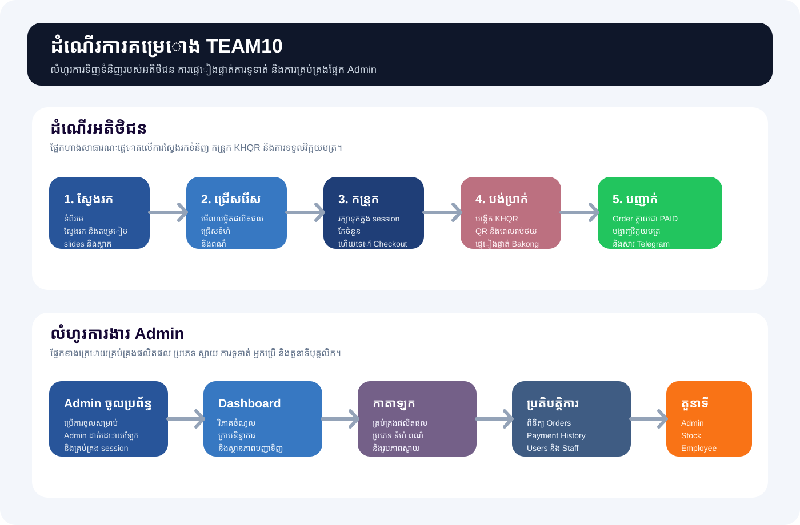
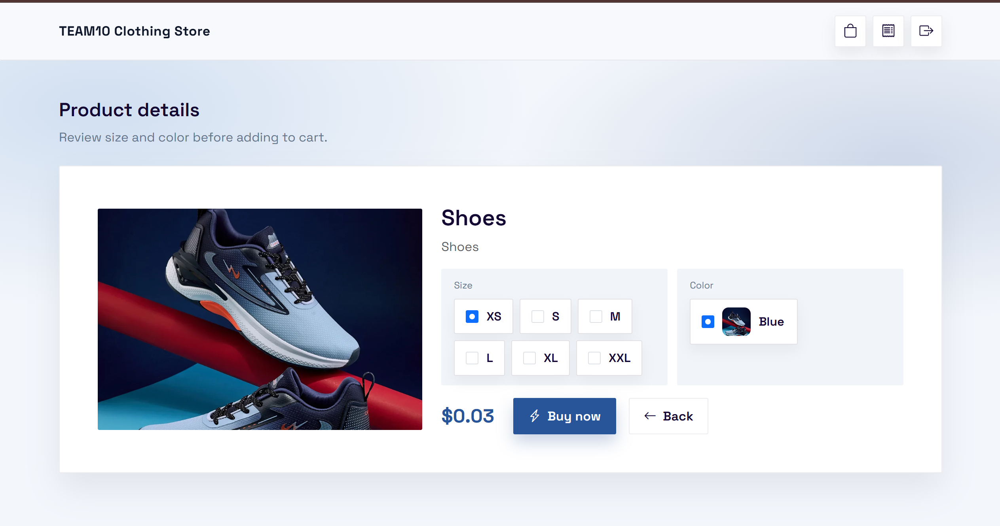
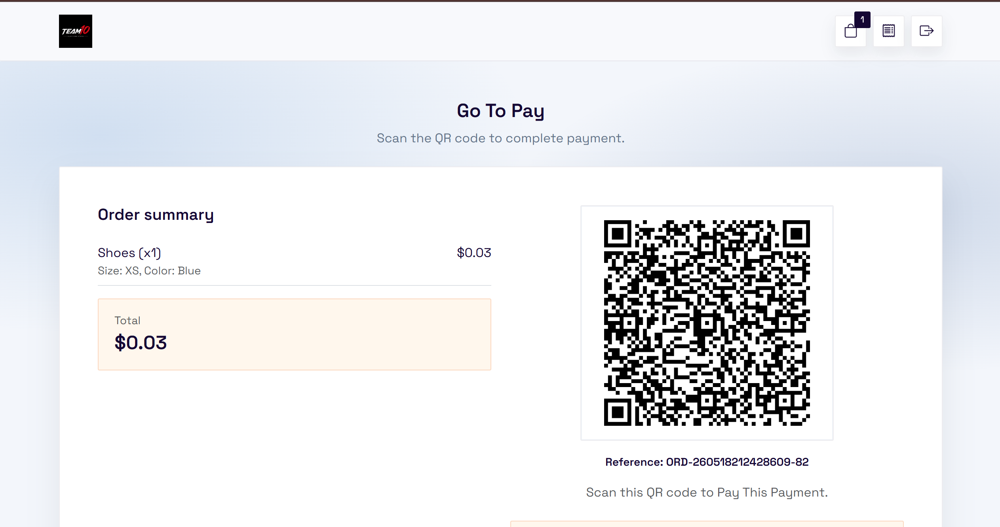
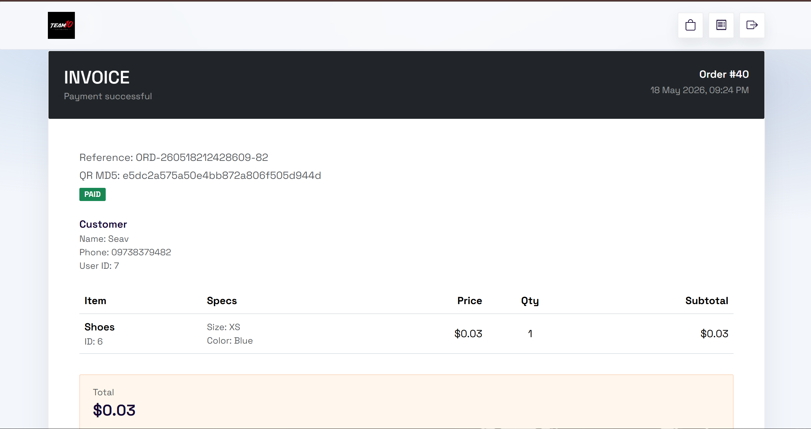
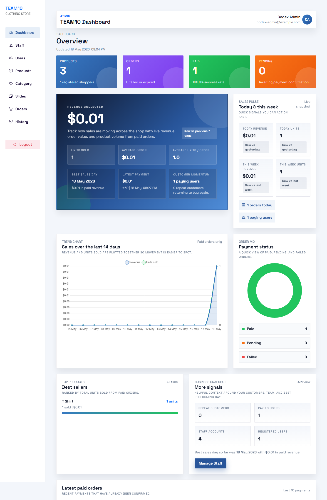
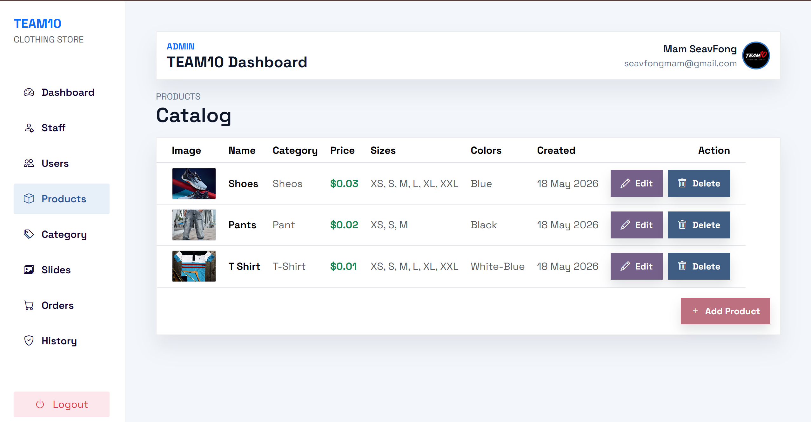
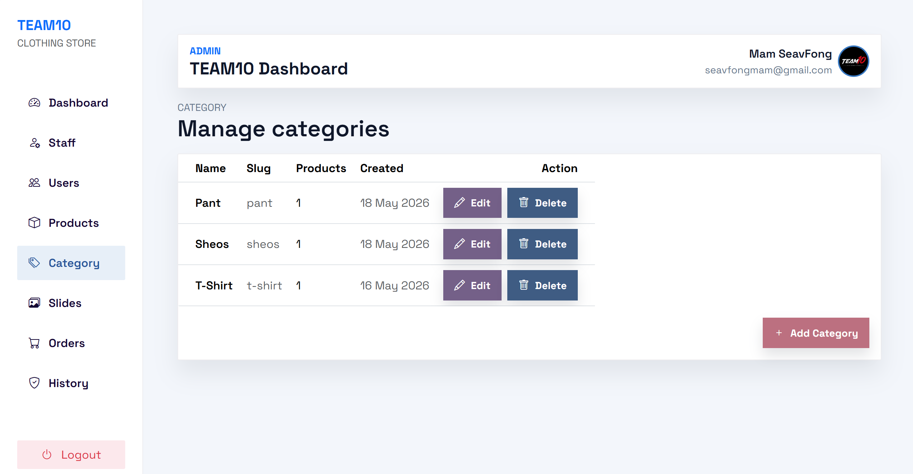
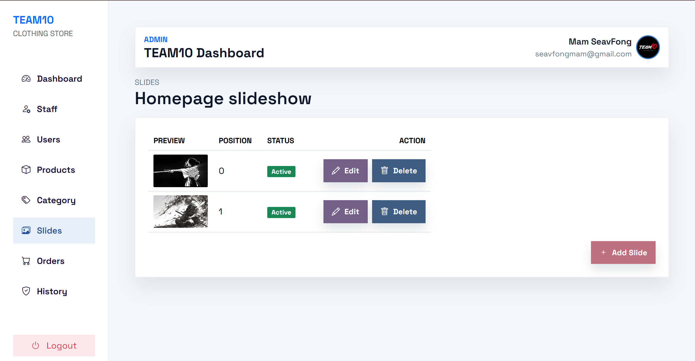
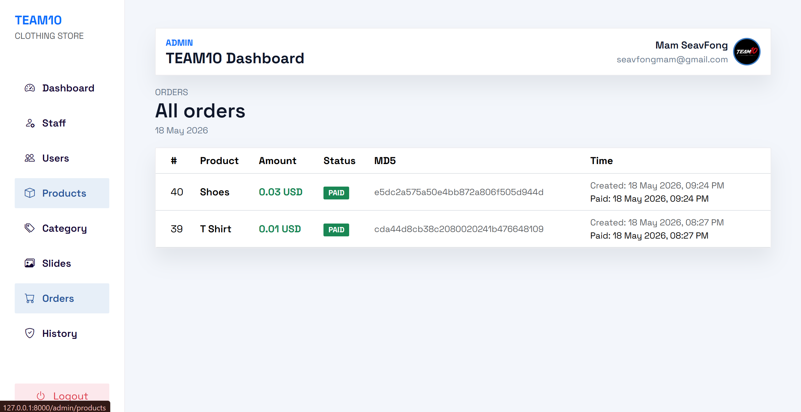

លំហូរទូទាត់ KHQR
ផ្ទាំងវិភាគ Admin
ឯកសារគម្រោង TEAM10 Clothing Store
ឯកសារនេះសង្ខេបអំពីរចនាប័ទ្មរបស់គម្រោង ពណ៌ អក្សរ
និងដំណើរការសំខាន់ៗរបស់ប្រព័ន្ធ ចាប់ពីទំព័រហាង ការទូទាត់ Checkout
ការបង្ហាញវិក្កយបត្រ រហូតដល់ផ្នែកគ្រប់គ្រង Admin។
រូបភាពទាំងអស់នៅក្នុងរបាយការណ៍នេះយកមកពី docs/assets។
1. សេចក្ដីសង្ខេបគម្រោង
TEAM10 Clothing Store គឺជាកម្មវិធីវេបដែលសង់ដោយ Laravel មាន storefront សម្រាប់អតិថិជន ការចុះឈ្មោះ និងចូលគណនី កន្រ្តកទំនិញក្នុង session ការទូទាត់ KHQR ការបង្ហាញវិក្កយបត្រ និង workspace សម្រាប់ Admin ដើម្បីគ្រប់គ្រងផលិតផល ប្រភេទ ស្លាយ orders និងបុគ្គលិក។
បច្ចេកវិទ្យា និង package
មុខងារសំខាន់ៗ
- ទំព័រហាងសម្រាប់មើលផលិតផល និង filter តាម category។
- ការចុះឈ្មោះ និងចូលគណនីដោយលេខទូរស័ព្ទ ឬអ៊ីមែល។
- ទំព័រលម្អិតផលិតផលសម្រាប់ជ្រើសទំហំ និងពណ៌។
- កន្រ្តក Checkout ការទូទាត់ KHQR និងវិក្កយបត្របន្ទាប់ពីបង់ប្រាក់។
- Dashboard សម្រាប់វិភាគចំណូល ចំនួនលក់ និងស្ថានភាព Order។
- ការគ្រប់គ្រងតាមតួនាទីរបស់ Admin, Stock Controller និង Employee។
2. ប្រព័ន្ធពណ៌ និងអក្សរ
គម្រោងនេះប្រើពណ៌ខៀវជាចម្បង ជាមួយផ្ទៃស សម្រាប់ content និងអក្សរពណ៌ slate សម្រាប់ព័ត៌មានជំនួយ។ អក្សរត្រូវបានបែងចែករវាង ផ្នែកកម្មវិធីសំខាន់ និងផ្នែក authentication។
#28559A
ប្រើសម្រាប់ប៊ូតុង ចំណុចសំខាន់ៗ និងការបង្ហាញនៅលើ Dashboard។
#1F3E77
ប្រើសម្រាប់ hover state និង contrast នៅក្នុង checkout និង admin។
#3778C2
ប្រើសម្រាប់ chip, chart, focus state និងការបង្ហាញបន្ទាប់បន្សំ។
#150734
ពណ៌អក្សរចម្បង និង brand tone នៅលើ storefront។
#F3F6FB
ប្រើជាផ្ទៃរួមសម្រាប់ទំព័រហាង ផ្នែក admin និង auth page។
#64748B
ប្រើសម្រាប់ subtitle, helper text និងព័ត៌មាន meta។
អក្សរផ្នែកកម្មវិធី
ប្រើនៅលើ storefront និង admin panel ដើម្បីឲ្យ UI មើលទំនើប និងច្បាស់។
អក្សរផ្នែកចូលគណនី
ប្រើនៅលើ admin login និង user authentication ដើម្បីឲ្យ form មើលស្អាត និងទន់ភ្លន់។
Corner system
Layout រួមបង្ខំឲ្យ buttons, cards, inputs និង rounded utilities ប្រើជ្រុងតូច 2px។
ប្រព័ន្ធរូបសញ្ញា
ប្រើសម្រាប់ navigation, action buttons, cart states, analytics និង form controls។
3. ដំណើរការគម្រោង
ប្រព័ន្ធនេះមានលំហូរសំខាន់ពីរ គឺដំណើរទិញទំនិញរបស់អតិថិជន និងលំហូរការងាររបស់ Admin។ រូបខាងក្រោមបង្ហាញដំណើរការសរុបទាំងមូល។

លំហូរអតិថិជន
- អតិថិជនចូលមើលទំព័រមេ ហើយស្វែងរកផលិតផលតាម category ឬ search។
- នៅពេលត្រូវ Checkout អតិថិជនអាចចុះឈ្មោះ ឬចូលគណនី។
- អតិថិជនមើលទំព័រលម្អិត ជ្រើសទំហំ និងពណ៌ រួចបន្ថែមចូលកន្រ្តក។
- បន្ទាប់មកពិនិត្យកន្រ្តក ហើយបន្តទៅអេក្រង់ទូទាត់ KHQR។
- ប្រព័ន្ធបង្កើត QR code រក្សាទុក pending order ហើយរង់ចាំការផ្ទៀងផ្ទាត់ពី Bakong។
- បន្ទាប់ពីបង់ប្រាក់ជោគជ័យ order នឹងក្លាយជា paid ហើយបង្ហាញវិក្កយបត្រ។
លំហូរ Admin
- Admin ចូលប្រព័ន្ធតាមទំព័រចូល back-office ដែលបានបំបែកចេញ។
- Dashboard បង្ហាញចំណូល និន្នាការ paid orders top products និង order mix។
- ផ្នែក catalog គ្រប់គ្រង products, categories, colors, sizes និង slides។
- ផ្នែកប្រតិបត្តិការ តាមដាន order history, paid payments និងការចូលប្រើរបស់បុគ្គលិក។
- Role checks កំណត់ថានរណាអាច create, edit ឬ delete resource នីមួយៗ។
4. រូបភាពផ្នែកអតិថិជន
រូបភាពខាងក្រោមបង្ហាញលំហូរផ្នែកអតិថិជនដោយប្រើ screenshot ថ្មីៗពី docs/assets។
រូប T-shirt ថ្មីត្រូវបានបង្ហាញទាំងនៅលើ storefront និង admin product list។

ទំព័រមេ
បង្ហាញ category filters, product cards និងរូប T-shirt ថ្មីនៅក្នុង storefront listing។

ទំព័រចុះឈ្មោះ
Form សម្រាប់បង្កើតគណនីថ្មី ដោយមានលេខទូរស័ព្ទ អ៊ីមែលជាជម្រើស និងពាក្យសម្ងាត់។

ទំព័រចូលគណនី
អនុញ្ញាតឲ្យអ្នកប្រើចូលតាមលេខទូរស័ព្ទ ឬអ៊ីមែល។

ទំព័រលម្អិតផលិតផល
បង្ហាញរូបផលិតផល ការជ្រើសទំហំ ពណ៌ និងប៊ូតុងទិញ។

កន្រ្តកទំនិញ
អតិថិជនអាចពិនិត្យទំនិញ កែចំនួន លុប ឬបន្តទៅការទូទាត់។

ទំព័រទូទាត់ KHQR
បង្ហាញ QR, reference number, total amount និងស្ថានភាពផ្ទៀងផ្ទាត់ការទូទាត់។

វិក្កយបត្របន្ទាប់ពីបង់ប្រាក់
បង្ហាញព័ត៌មានអតិថិជន បញ្ជីទំនិញ និងស្ថានភាព PAID បន្ទាប់ពីបង់ប្រាក់ជោគជ័យ។
5. រូបភាពផ្នែក Admin
រូបភាពទាំងនេះបង្ហាញផ្នែកគ្រប់គ្រងរបស់ប្រព័ន្ធ រួមមាន Dashboard, catalog tools និង order operations។
Admin login
ទំព័រចូលប្រព័ន្ធសម្រាប់ back-office ជាមួយ layout ពណ៌ខៀវ និង form ច្បាស់លាស់។

Admin dashboard
បង្ហាញចំណូល និន្នាការ top products payment status និងសញ្ញាប្រតិបត្តិការសម្រាប់ staff។

គ្រប់គ្រងផលិតផល
តារាងផលិតផលបង្ហាញរូប T-shirt ថ្មី ទំហំ ពណ៌ និង action buttons។

គ្រប់គ្រង Category
បញ្ជី category ជាមួយចំនួន product និងការបន្ថែម កែប្រែ និងលុប។

គ្រប់គ្រង Slides
ការគ្រប់គ្រង slideshow នៅទំព័រមេ ជាមួយ preview, position, status និង controls។

គ្រប់គ្រង Orders
បង្ហាញ Product, Amount, Status, MD5 និងពេលវេលាបង្កើត ឬបង់ប្រាក់។
6. ឯកសារកូដសំខាន់ៗ
ឯកសារខាងក្រោមជាផ្នែកសំខាន់សម្រាប់ design system, data flow និងដំណើរការដែលបានពិពណ៌នានៅក្នុងរបាយការណ៍នេះ។
resources/views/layouts/app.blade.php
Layout រួម និងការបង្ខំ 2px radius ទូទាំងប្រព័ន្ធ។
resources/views/products/_styles.blade.php
កំណត់ពណ៌ storefront, buttons, cards, responsive UI និង component styles។
resources/views/admin/layouts/app.blade.php
Layout របស់ Admin, navigation, typography, card system និង action buttons។
resources/views/auth/login.blade.php
ទំព័រ admin login និង UI សម្រាប់ការបង្ហាញសារ session expired។
routes/web.php
កំណត់ public routes, user auth, cart, checkout និង admin routes។
app/Http/Controllers/ProductController.php
គ្រប់គ្រង listing, search, category filter និង total bought។
app/Http/Controllers/CartController.php
គ្រប់គ្រងការបន្ថែម កែប្រែ លុប និងសម្អាត cart ក្នុង session។
app/Http/Controllers/PaymentController.php
គ្រប់គ្រងការបង្កើត KHQR, pending order, verification, invoice និង Telegram notification។
app/Http/Controllers/UserAuthController.php
គ្រប់គ្រង register, login, normalize phone/email និង logout របស់អ្នកប្រើ។
app/Http/Controllers/Admin/OrderAdminController.php
គ្រប់គ្រង dashboard analytics, revenue, chart និង operational reports។